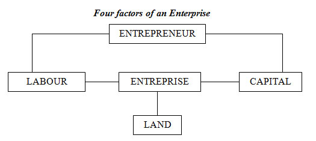
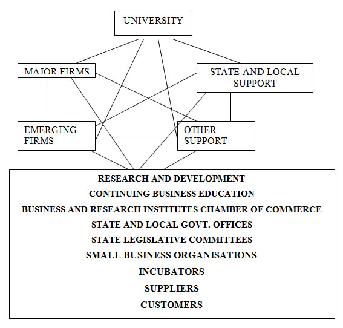

ARM402 :: Lecture 04 :: ENTREPRENEUR VS PROFESSIONAL MANAGERS

Introduction
Entrepreneurs and professional managers are the two sides of the coin. Their individual itineraries will make the difference between success and failure for the enterprise.
An effective entrepreneurial strategy should be an integral part of an enterprise’s competitive positioning. The progressive development in the size of business and the separation of ownership and management in enterprises has made management a distinct profession. Although both strive to achieve the similar goals they are said to distinguish themselves in varied measures.
According to the Sachar Committee on Company Law “A professional manager is an individual who
i. belongs to the profession of law, accountancy, medicine, engineering or architecture, or
ii. is a member of a recognised professional body or institutional body exercising supervisory jurisdiction over its members, or
iii. is a holder of a degree or diploma in management from any recognised university and possesses not less than five years experience in an executive capacity in a company, corporation or in the government”; or possesses minimum of ten years’ experience in the same capacity and in the same institutions mentioned in the third category.
A professional manager is one who specializes in the work of planning, organizing, leading and controlling the efforts of others by the systematic used of classified knowledge and principles. He subscribes to the standards of practice and code of ethics established by a recognized body. To be a professional manager he should
- have an insight of his job requirements;
- carry out continuous updating of his learning to fulfill his job requirements;
- have a performance-oriented relationship with his subordinates, super-ordinates and colleagues based on mutual respect to facilitate team work for collective contribution to the organization;
- have a relationship based on long-term mutual benefit approach with customers, suppliers and other members of the public, and
- have communication with colleagues to improve the standard contribution and the prestige managerial profession.
Professional Management
The progressive development in the size of business and the separation of ownership and management in the corporate enterprises have contributed to the emergence of management as a distinct profession. A management can be professional not, by hiring professional managers but by adopting the style of professional management. Professional management organizes managerial functions by setting long-term objectives, formulating policies and strategies, developing formal communication
network and evaluation system to deal with the emergence of
business problems.
The characteristics of professional management are as follows:
Body of Knowledge: Management theory has a philosophy of its own. It is based on systematic and scientific studies. Precisely, the management of knowledge is’ the passport to enter the world of entrepreneurship.
Management Tools: Tools of management such as accounting, business law, psychology, statistics and data processing have been developed to enhance the practical utility of the science of management.
Specialization: There is a growing tendency to select and appoint highly qualified, trained and experienced persons to manage the business in each functional area of management. This has created greater demand for professionals.
Separate Discipline: Management studies in many universities and institutions of higher learning are recognized as a separate discipline. Seminars, special courses, and training programmes have become essential in management areas like export management, personnel management, production management, marketing management, financial’ management, etc.
Code of Conduct: Business management is regarded as a social institution. It has social. responsibilities towards customers, employees’ and the society on the whole. Consumer-oriented marketing concept is an important corporate code of conduct. Pressure of consumerism, trade unionism, public opinion and legislation are definitely inducing the management to evolve a code of ethics for consumer satisfactions and. holding a major
market share.
Professional Association: In our country too, business management associations have’ been formed. They mainly aim at spreading the ethics of business management and build up a sound public image of the managerial profession.
A professional manager is required to possess specific management knowledge relating to (a) Technical processes, products, materials, equipment and procedures; (b) Economic knowledge about the basic objective of the entrepreneurs and its position in
the economic and social system within which it is operating; (c) Human knowledge about employee motivation, moral and delegation of authority; and (d) Administrative knowledge about application and analysis of data. This will facilitate him to deal with various problems of the organisation in an effective manner.
A person can become a professional manager by the acquisition of knowledge through formal education. . An owner-manager can achieve success due to his personal cultural traits. Many great entrepreneurs are self-made, for they were not handicapped by
their lack of formal education but came out as successful entrepreneurs due to their skill and intelligence. One can easily identify such an entrepreneur manager in any profession, may it be bide or aggravate manufacturing, polishing or grinding, retailing or wholesaling.
Managers and Entrepreneurs
Both managers and entrepreneurs are answerable for producing results. The results are, of course, different. In their respective result areas, the buck stops with them. While they can delegate, they are finally accountable.
Both have to produce results through people working with them though they deal with different sets of people. They are not effective in the long run, if they are loners.
Both are decision-makers but the decisions are different as their tasks vary. Both have to operate under constraints, which are understandably different.
To be effective in their respective roles, both have to follow sound principles of management like planning, staffing, delegation and control. The focus of these management tools may vary depending upon the ultimate purpose.
Similarities between Managers and Entrepreneurs
- • To produce results
- • To produce results through people
- • To take decisions
- • To cooperate under constraints
- • To follow sound principles of management
A successful organisation needs both entrepreneurship and management. The Chief Executive and his team of top-level executives, the managerial role by the middle-level and joint-level executives may play the entrepreneurial role;
A Management Tool
The efficiency of professional management lies in the managerial approach, which does not suffer from dogmatic, ideological and political trappings. It is an approach which trackless the problem as a ‘whole’ and not in ‘fractions.’
The professional manager brings into operation planning, organising, staffing, motivating, controlling and coordinating the work of technocrats and professional aspects to achieve predetermined goals. The professional manager must possess a desire to achieve, to expand, to build and to grow. His goal should be to produce the best results in the shortest time and at least cost. The manager, who has had to benefit of management education and has exposed to the managerial tools and techniques of achieving the profit-cum-growth, will be in a position to deliver the goods to in developing economy like ours.
It is characteristic of an established profession that its members accept the obligation to contribute to the advancement of standards and to the education of the future aspirants. The more eminent the member, the more readily he recognizes the obligation. ‘It is quite likely that his personal contribution to teaching may be small but it will be of high quality. This is the task facing the professional managers of the future.
The entrepreneur may be a, manager but a paid manager cannot acquire the position of an entrepreneur.
An entrepreneur has great motivation to manage his business successfully. He is keen towards developing business through innovation, and is satisfied when his efforts give him positive results. He is the investor, risk-bearer, manager and controller. The entrepreneur may appoint a manager and delegate some of his functions. However, manager even after performing his assigned duties cannot substitute the entrepreneur.
The entrepreneur lays down a broad policy for business, assumes risk and makes the business a concern. The main factors, which distinguish an entrepreneur from a professional manager as shown below:
Distinctive Features of Entrepreneurs and Professional Manager
Professional Manager
1. Setting of objectives
2. Policy formulation
3. Strategic Planning
4. Formal communication
5. Organising
6. Motivating
7 Controlling
8. Administrator
9. Skilled, knowledgeable
10. Confident
11. Specialist
12. Loyal
13. Planner
14. Implementer
Entrepreneur
1. Perception of an/opportunity
2. Risk-taking
3. Tactical Planning
4. Interpersonal communication
5. Negotiating
6. Troubleshooting
7. Making it a growing concern
8. Innovator
9. Motivator
10. Determined
11. Idealist
12. Committed
13. Visionary
14. Planner
Entrepreneur vs. Manager: The, entrepreneur is a person who is motivated satisfy a high need for achievement in innovative and creative activities. His creative behaviour and innovative spirit. which forms a process of an endless chain is termed as entrepreneurship. It is not enough for the entrepreneur to build up the process, but equally important task for him is to manage the business. He performs entrepreneurial vis-à-vis managerial functions. The entrepreneur enters at a transitional stage in which what is initially with innovation becomes a routine., for him the transition from entrepreneurship to management. Also, the emphasis switches from techniques and analytical methods to insight and to involvement with people. The entrepreneur perceives and exploits opportunity, and the subsequent steps necessary for organization and pertinent to management.
The entrepreneur differs from the professional manager in that he undertakes a venture for his personal gratification. As such he cannot live within the framework of occupational behaviour set by others. He may engage professional manager to perform some of his functions such as setting of objectives, policies, procedures, rules, strategies and formal communication network. However; the entrepreneurial functions of innovation? Assumption of business risk and commitment to his vision cannot be delegated to the’ professional manager. Failure to the professional executive may mean a little more than locating a new job perhaps even at a higher salary, whereas failure of an entrepreneur in his efforts would mean a devastating loss to his career. The professional manager has to work within the framework of policy guidelines laid down by the entrepreneur.
Entrepreneur and Enterprises
Entrepreneur is the fourth factor of enterprise. According to Noah Webster, “entrepreneur is one who assumes the risk and management of business.”
The enterprise is the basic unit of an economic organisation. It produces goods and services worth more than the resources used. Thus, any effort for it to bear fruit ultimately affect directly or indirectly individual enterprise. Enterprise is an undertaking, which involves activity, courage, and energy. It involves the willingness to assume risks and decision making, in undertaking an economic activity. It also involves innovation. Thus, entrepreneur and enterprise are inter-linked, enterprise being the offshoot of an entrepreneur. Its success is dependent on the entrepreneur. Peter Drucker has observed, “Innovation is the specific tool of entrepreneurs, the means by which they exploit change as an opportunity for a different business or a different service. It is capable of being practiced.”
Intrapreneurs
Of late, a new breed of corporate entrepreneurs has come to the fore in large organizations. They are called “intrapreneurs.” They are entrepreneurs who catch hold of a new idea for a product, service, or process and work to bring this idea to fruition within the framework of the organisation. Intrapreneurs with their innovations and dedicated effort are perceived as a valuable asset by the organisation, inspiring others. He serves as a champion to others in the organisation. In America, a number of intrapreneurs are leaving their jobs to start their own ventures. Many such intrapreneurs have become exceedingly successful in their new ventures and, what is more, they are causing a threat to the companies they left a few years ago.

Entrepreneur vs. Administrator
Management in a small business organisation is performed quite differently from the management process in large companies In fact, the role of entrepreneurs is quite different “from the’ role of professional administrators in large organisations. A person in effective control of a business unit underlines the adaptive nature of managerial processes in a small firm. Entrepreneurship has connotations of enterprise, opportunism, individuality, in contrast to the. Connotations of the terms “manager” and “administration”, which are associated with notions of organisation, planning, professionalism, rationality and. predictive management processes.
The administrator in a large firm is primarily concerned with those activities relevant to predictive management processes, that is, with activities related to prediction and control On the other hand, the owner-manager of a small business organisation needs primarily to perform activities relevant to adaptive management process, activities that enable him to exploit the advantages he has in being a small enterprise. An entrepreneur puts emphasis on the entrepreneurial activities of management process, so he would hold attitudes related to entrepreneurial orientation, while the administrator of a large organisation would hold attitudes related to the administrative.
Owner-Manager vs. Professional-Manager
The owner-manager is identified with individuality, flair, strong motivation to achieve success and the urge to grow while the professional manager conjures up a picture of organising, planning, motivating and controlling. The owner-manager exhibits a strong desire for independence, which he demonstrates through the building of an organisation. The owner-manager assumes all business risks and stands to lose not only his capital but reputation and prestige in the event of failure of business, whereas the professional manager is not exposed to such risks.
The differences between an owner-manager and a professional manager are much deeper which can be studied with respect to the function, business philosophy, and the characteristic skills which each incorporates.

Professional Support
- • Accounting
- • Legal
- • Financial Banks
- • Venture Capital
The Entrepreneurial Network
Entrepreneurship is a dynamic process which requires links not only among and individuals but also among and between a variety of institutions. The stronger, more complex and more diverse the web of relationships, the more the entrepreneur is likely to have access to opportunities, the greater are his chances of solving problems expeditiously, and ultimately the greater the chances of success for the new venture.
Conclusion
Growth is a conscious, controllable factor, which must be planned and coordinated. Entrepreneurship plays a crucial role in this growth process. In sum, I realize the managing change may be my actual theme. I am reminded of something that John Stuart Mill said more than 100 years ago: “Mankind is divided into those who are still what they were and those who have changed: into the men of the present age and the men of the past.” Successfully managing the “unmanageable” requires us to become those men who have changed. It requires flexibility, imagination and a willingness to accept change as an opportunity and a stimulus for development and growth. Therefore, organizations, governments and society must encourage it.
Entrepreneurship perceives opportunities inherent in change, creates a desire for pursuing them and creates an environment in which success is possible. The concept of the entrepreneur should be understood in its broadest sense that he is a person who acts as an agent of change for the good of the people. He not only brings change in economy but is responsible for social development also. At the same time, the professional manager translates the entrepreneurial vision into a reality by adopting his professional efficiency and managerial skills. The entrepreneur and professional managers are, therefore, a critical input of socioeconomic development.
| Download this lecture as PDF here |